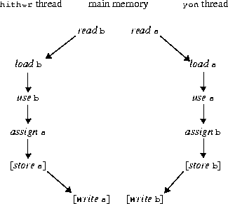
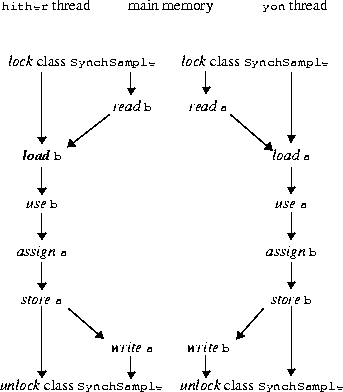
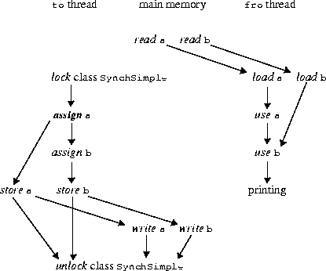

CHAPTER 17
While most of the discussion in the preceding chapters is concerned only with the behavior of Java code as executed a single statement or expression at a time, that is, by a single thread, each Java Virtual Machine can support many threads of execution at once. These threads independently execute Java code that operates on Java values and objects residing in a shared main memory. Threads may be supported by having many hardware processors, by time-slicing a single hardware processor, or by time-slicing many hardware processors.
Java supports the coding of programs that, though concurrent, still exhibit deterministic behavior, by providing mechanisms for synchronizing the concurrent activity of threads. To synchronize threads, Java uses monitors, which are a high-level mechanism for allowing only one thread at a time to execute a region of code protected by the monitor. The behavior of monitors is explained in terms of locks; there is a lock associated with each object.
The synchronized statement (§14.17) performs two special actions relevant only to multithreaded operation: (1) after computing a reference to an object but before executing its body, it locks a lock associated with the object, and (2) after execution of the body has completed, either normally or abruptly, it unlocks that same lock. As a convenience, a method may be declared synchronized; such a method behaves as if its body were contained in a synchronized statement.
The methods wait (§20.1.6, §20.1.7, §20.1.8), notify (§20.1.9), and notifyAll (§20.1.10) of class Object support an efficient transfer of control from one thread to another. Rather than simply "spinning" (repeatedly locking and unlocking an object to see whether some internal state has changed), which consumes computational effort, a thread can suspend itself using wait until such time as another thread awakens it using notify. This is especially appropriate in situations where threads have a producer-consumer relationship (actively cooperating on a common goal) rather than a mutual exclusion relationship (trying to avoid conflicts while sharing a common resource).
As a thread executes code, it carries out a sequence of actions. A thread may use the value of a variable or assign it a new value. (Other actions include arithmetic operations, conditional tests, and method invocations, but these do not involves variables directly.) If two or more concurrent threads act on a shared variable, there is a possibility that the actions on the variable will produce timing-dependent results. This dependence on timing is inherent in concurrent programming, producing one of the few places in Java where the result of executing a program is not determined solely by this specification.
Each thread has a working memory, in which it may keep copies of the values of variables from the main memory that is shared between all threads. To access a shared variable, a thread usually first obtains a lock and flushes its working memory. This guarantees that shared values will be thereafter be loaded from the shared main memory to the threads working memory. When a thread unlocks a lock it guarantees the values it holds in its working memory will be written back to the main memory.
This chapter explains the interaction of threads with the main memory, and thus with each other, in terms of certain low-level actions. There are rules about the order in which these actions may occur. These rules impose constraints on any implementation of Java, and a Java programmer may rely on the rules to predict the possible behaviors of a concurrent Java program. The rules do, however, intentionally give the implementor certain freedoms; the intent is to permit certain standard hardware and software techniques that can greatly improve the speed and efficiency of concurrent code.
Briefly put, these are the important consequences of the rules:
long and double values; see §17.4.)
Every thread has a working memory in which it keeps its own working copy of variables that it must use or assign. As the thread executes a Java program, it operates on these working copies. The main memory contains the master copy of every variable. There are rules about when a thread is permitted or required to transfer the contents of its working copy of a variable into the master copy or vice versa
The main memory also contains locks; there is one lock associated with each object. Threads may compete to acquire a lock.
For the purposes of this chapter, the verbs use, assign, load, store, lock, and unlock name actions that a thread can perform. The verbs read, write, lock, and unlock name actions that the main memory subsystem can perform. Each of these actions is atomic (indivisible).
A use or assign action is a tightly coupled interaction between a thread's execution engine and the thread's working memory. A lock or unlock action is a tightly coupled interaction between a thread's execution engine and the main memory. But the transfer of data between the main memory and a thread's working memory is loosely coupled. When data is copied from the main memory to a working memory, two actions must occur: a read action performed by the main memory followed some time later by a corresponding load action performed by the working memory. When data is copied from a working memory to the main memory, two actions must occur: a store action performed by the working memory followed some time later by a corresponding write action performed by the main memory. There may be some transit time between main memory and a working memory, and the transit time may be different for each transaction; thus actions initiated by a thread on different variables may viewed by another thread as occurring in a different order. For each variable, however, the actions in main memory on behalf of any one thread are performed in the same order as the corresponding actions by that thread. (This is explained in greater detail below.)
A single Java thread issues a stream of use, assign, lock, and unlock actions as dictated by the semantics of the Java program it is executing. The underlying Java implementation is then required additionally to perform appropriate load, store, read, and write actions so as to obey a certain set of constraints, explained below. If the Java implementation correctly follows these rules and the Java application programmer follows certain other rules of programming, then data can be reliably transferred between threads through shared variables. The rules are designed to be "tight" enough to make this possible but "loose" enough to allow hardware and software designers considerable freedom to improve speed and throughput through such mechanisms as registers, queues, and caches.
Here are the detailed definitions of each of the actions:
Threads do not interact directly; they communicate only through the shared main memory. The relationships between the actions of a thread and the actions of main memory are constrained in three ways:
In the rules that follow, the phrasing "B must intervene between A and C" means that action B must follow action A and precede action C.
+ operator requires that a single use action occur on V; an occurrence of V as the left-hand operand of the assignment operator = requires that a single assign action occur. All use and assign actions by a given thread must occur in the order specified by the program being executed by the thread. If the following rules forbid T to perform a required use as its next action, it may be necessary for T to perform a load first in order to make progress.
There are also certain constraints on the read and write actions performed by main memory:
volatile variables (§17.7).
double and longdouble or long variable is not declared volatile, then for the purposes of
load, store, read, and write actions they are treated as if they were two variables of
32 bits each: wherever the rules require one of these actions, two such actions are
performed, one for each 32-bit half. The manner in which the 64 bits of a double
or long variable are encoded into two 32-bit quantities is implementation-dependent.
This matters only because a read or write of a double or long variable may be handled by an actual main memory as two 32-bit read or write actions that may be separated in time, with other actions coming between them. Consequently, if two threads concurrently assign distinct values to the same shared non-volatile double or long variable, a subsequent use of that variable may obtain a value that is not equal to either of the assigned values, but some implementation-dependent mixture of the two values.
An implementation is free to implement load, store, read, and write actions for double and long values as atomic 64-bit actions; in fact, this is strongly encouraged. The model divides them into 32-bit halves for the sake of several currently popular microprocessors that fail to provide efficient atomic memory transactions on 64-bit quantities. It would have been simpler for Java to define all memory transactions on single variables as atomic; this more complex definition is a pragmatic concession to current hardware practice. In the future this concession may be eliminated. Meanwhile, programmers are cautioned always to explicitly synchronize access to shared double and long variables.
volatile, then additional constraints apply to the actions
of each thread. Let T be a thread and let V and W be volatile variables.
volatile, then the rules in the previous sections are
relaxed slightly to allow store actions to occur earlier than would otherwise be
permitted. The purpose of this relaxation is to allow optimizing Java compilers to
perform certain kinds of code rearrangement that preserve the semantics of properly
synchronized programs but might be caught in the act of performing memory
actions out of order by programs that are not properly synchronized.
Suppose that a store by T of V would follow a particular assign by T of V according to the rules of the previous sections, with no intervening load or assign by T of V. Then that store action would send to the main memory the value that the assign action put into the working memory of thread T. The special rule allows the store action to instead occur before the assign action, if the following restrictions are obeyed:
If a thread uses a particular shared variable only after locking a particular lock and before the corresponding unlocking of that same lock, then the thread will read the shared value of that variable from main memory after the lock action, if necessary, and will copy back to main memory the value most recently assigned to that variable before the unlock action. This, in conjunction with the mutual exclusion rules for locks, suffices to guarantee that values are correctly transmitted from one thread to another through shared variables.
The rules for volatile variables effectively require that main memory be touched exactly once for each use or assign of a volatile variable by a thread, and that main memory be touched in exactly the order dictated by the thread execution semantics. However, such memory actions are not ordered with respect to read and write actions on nonvolatile variables.
a and b and methods hither and yon:
class Sample {
int a = 1, b = 2;
void hither() {
a = b;
}
void yon() {
b = a;
}
}
Now suppose that two threads are created, and that one thread calls hither while
the other thread calls yon. What is the required set of actions and what are the
ordering constraints?
Let us consider the thread that calls hither. According to the rules, this thread must perform an use of b followed by an assign of a. That is the bare minimum required to execute a call to the method hither.
Now, the first action on variable b by the thread cannot be use. But it may be assign or load. An assign to b cannot occur because the program text does not call for such an assign action, so a load of b is required. This load action by the thread in turn requires a preceding read action for b by the main memory.
The thread may optionally store the value of a after the assign has occurred. If it does, then the store action in turn requires a following write action for a by the main memory.
The situation for the thread that calls yon is similar, but with the roles of a and b exchanged.
The total set of actions may be pictured as follows:
Here an arrow from action A to action B indicates that A must precede B.
In what order may the actions by the main memory occur? The only constraint is that it is not possible both for the write of a to precede the read of a and for the write of b to precede the read of b, because the causality arrows in the diagram would form a loop so that an action would have to precede itself, which is not allowed. Assuming that the optional store and write actions are to occur, there are three possible orderings in which the main memory might legitimately perform its actions. Let ha and hb be the working copies of a and b for the hither thread, let ya and yb be the working copies for the yon thread, and let ma and mb be the master copies in main memory. Initially ma=1 and mb=2. Then the three possible orderings of actions and the resulting states are as follows:
aread a, read bwrite b (then ha=2, hb=2, ma=2, mb=2, ya=2, yb=2)
awrite a, write bread b (then ha=1, hb=1, ma=1, mb=1, ya=1, yb=1)
awrite a, read bwrite b (then ha=2, hb=2, ma=2, mb=1, ya=1, yb=1)
b is copied into a, a is copied
into b, or the values of a and b are swapped; moreover, the working copies of the
variables might or might not agree. It would be incorrect, of course, to assume that
any one of these outcomes is more likely than another. This is one place in which
the behavior of a Java program is necessarily timing-dependent.
Of course, an implementation might also choose not to perform the store and write actions, or only one of the two pairs, leading to yet other possible results.
Now suppose that we modify the example to use synchronized methods:
class SynchSample {
int a = 1, b = 2;
synchronized void hither() {
a = b;
}
synchronized void yon() {
b = a;
}
}
Let us again consider the thread that calls hither. According to the rules, this
thread must perform a lock action (on the class object for class SynchSample)
before the body of method hither is executed. This is followed by a use of b and
then an assign of a. Finally, an unlock action on the class object must be performed
after the body of method hither completes. That is the bare minimum
required to execute a call to the method hither.
As before, a load of b is required, which in turn requires a preceding read action for b by the main memory. Because the load follows the lock action, the corresponding read must also follow the lock action.
Because an unlock action follows the assign of a, a store action on a is mandatory, which in turn requires a following write action for a by the main memory. The write must precede the unlock action.
The situation for the thread that calls yon is similar, but with the roles of a and b exchanged.
The total set of actions may be pictured as follows:
The lock and unlock actions provide further constraints on the order of actions by the main memory; the lock action by one thread cannot occur between the lock and unlock actions of the other thread. Moreover, the unlock actions require that the store and write actions occur. It follows that only two sequences are possible:
aread a, read bwrite b (then ha=2, hb=2, ma=2, mb=2, ya=2, yb=2)
awrite a, write bread b (then ha=1, hb=1, ma=1, mb=1, ya=1, yb=1)
a and b.
a and b and methods to and fro:
class Simple {
int a = 1, b = 2;
void to() {
a = 3;
b = 4;
}
void fro() {
System.out.println("a= " + a + ", b=" + b);
}
}
Now suppose that two threads are created, and that one thread calls to while the
other thread calls fro. What is the required set of actions and what are the ordering
constraints?
Let us consider the thread that calls to. According to the rules, this thread must perform an assign of a followed by an assign of b. That is the bare minimum required to execute a call to the method to. Because there is no synchronization, it is at the option of the implementation whether or not to store the assigned values back to main memory! Therefore the thread that calls fro may obtain either 1 or 3 for the value of a, and independently may obtain either 2 or 4 for the value of b.
Now suppose that to is synchronized but fro is not:
class SynchSimple {
int a = 1, b = 2;
synchronized void to() {
a = 3;
b = 4;
}
void fro() {
System.out.println("a= " + a + ", b=" + b);
}
}
In this case the method to will be forced to store the assigned values back to main
memory before the unlock action at the end of the method. The method fro must,
of course, use a and b (in that order) and so must load values for a and b from
main memory.
The total set of actions may be pictured as follows:
Here an arrow from action A to action B indicates that A must precede B.
In what order may the actions by the main memory occur? Note that the rules do not require that write a occur before write b; neither do they require that read a occur before read b. Also, even though method to is synchronized, method fro is not synchronized, so there is nothing to prevent the read actions from occurring between the lock and unlock actions. (The point is that declaring one method synchronized does not of itself make that method behave as if it were atomic.)
As a result, the method fro could still obtain either 1 or 3 for the value of a, and independently could obtain either 2 or 4 for the value of b. In particular, fro might observe the value 1 for a and 4 for b. Thus, even though to does an assign to a and then an assign to b, the write actions to main memory may be observed by another thread to occur as if in the opposite order.
Finally, suppose that to and fro are both synchronized:
class SynchSynchSimple {
int a = 1, b = 2;
synchronized void to() {
a = 3;
b = 4;
}
synchronized void fro() {
System.out.println("a= " + a + ", b=" + b);
}
}
In this case, the actions of method fro cannot be interleaved with the actions of method to, and so fro will print either "a=1, b=2" or "a=3, b=4".Thread (§20.20) and
ThreadGroup (§20.21). Creating a Thread object creates a thread and that is the
only way to create a thread. When the thread is created, it is not yet active; it
begins to run when its start method (§20.20.14) is called.
Every thread has a priority. When there is competition for processing resources, threads with higher priority are generally executed in preference to threads with lower priority. Such preference is not, however, a guarantee that the highest priority thread will always be running, and thread priorities cannot be used to reliably implement mutual exclusion.
The synchronized statement (§14.17) computes a reference to an object; it then attempts to perform a lock action on that object and does not proceed further until the lock action has successfully completed. (A lock action may be delayed because the rules about locks can prevent the main memory from participating until some other thread is ready to perform one or more unlock actions.) After the lock action has been performed, the body of the synchronized statement is executed. If execution of the body is ever completed, either normally or abruptly, an unlock action is automatically performed on that same lock.
A synchronized method (§8.4.3.5) automatically performs a lock action when it is invoked; its body is not executed until the lock action has successfully completed. If the method is an instance method, it locks the lock associated with the instance for which it was invoked (that is, the object that will be known as this during execution of the body of the method). If the method is static, it locks the lock associated with the Class object that represents the class in which the method is defined. If execution of the method's body is ever completed, either normally or abruptly, an unlock action is automatically performed on that same lock.
Best practice is that if a variable is ever to be assigned by one thread and used or assigned by another, then all accesses to that variable should be enclosed in synchronized methods or synchronized statements.
Java does not prevent, nor require detection of, deadlock conditions. Programs where threads hold (directly or indirectly) locks on multiple objects should use conventional techniques for deadlock avoidance, creating higher-level locking primitives that don't deadlock, if necessary.
Wait sets are used by the methods wait (§20.1.6, §20.1.7, §20.1.8), notify (§20.1.9), and notifyAll (§20.1.10) of class Object. These methods also interact with the scheduling mechanism for threads (§20.20).
The method wait should be called for an object only when the current thread (call it T) has already locked the object's lock. Suppose that thread T has in fact performed N lock actions that have not been matched by unlock actions. The wait method then adds the current thread to the wait set for the object, disables the current thread for thread scheduling purposes, and performs N unlock actions to relinquish the lock. The thread T then lies dormant until one of three things happens:
notify method for that object and thread T happens to be the one arbitrarily chosen as the one to notify.
notifyAll method for that object.
 additional lock actions and then returns from the invocation of the
additional lock actions and then returns from the invocation of the wait
method. Thus, on return from the wait method, the state of the object's lock is
exactly as it was when the wait method was invoked.
The notify method should be called for an object only when the current thread has already locked the object's lock. If the wait set for the object is not empty, then some arbitrarily chosen thread is removed from the wait set and re-enabled for thread scheduling. (Of course, that thread will not be able to proceed until the current thread relinquishes the object's lock.)
The notifyAll method should be called for an object only when the current thread has already locked the object's lock. Every thread in the wait set for the object is removed from the wait set and re-enabled for thread scheduling. (Of course, those threads will not be able to proceed until the current thread relinquishes the object's lock.)
Contents | Prev | Next | Index
Java Language Specification (HTML generated by Suzette Pelouch on February 24, 1998)
Copyright © 1996 Sun Microsystems, Inc.
All rights reserved
Please send any comments or corrections to doug.kramer@sun.com